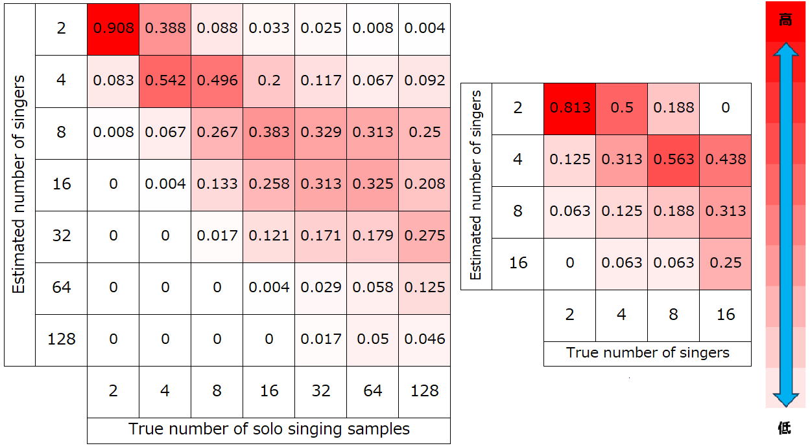

2025春季音響学会 デモサイト
実験1 揺らぎの有無による斉唱の自然性への影響
音声サンプル
timing
\begin{align}f_0\end{align}
spectrum
MOSスコア↑
1.56±0.15
✓
*3.94±0.11
✓
*3.80±0.11
✓
1.66±0.16
✓
✓
**4.10±0.10
✓
✓
**4.04±0.11
✓
✓
**4.06±0.11
✓
✓
✓
**
4.14±0.11
*,**は有意差が認められないことを表す(P < 0.05)
実験2 歌唱人数による斉唱への影響の調査
合成歌声
歌唱人数
音声
2人
4人
8人
16人
32人
64人
128人
実歌声
歌唱人数
音声
2人
4人
8人
16人
